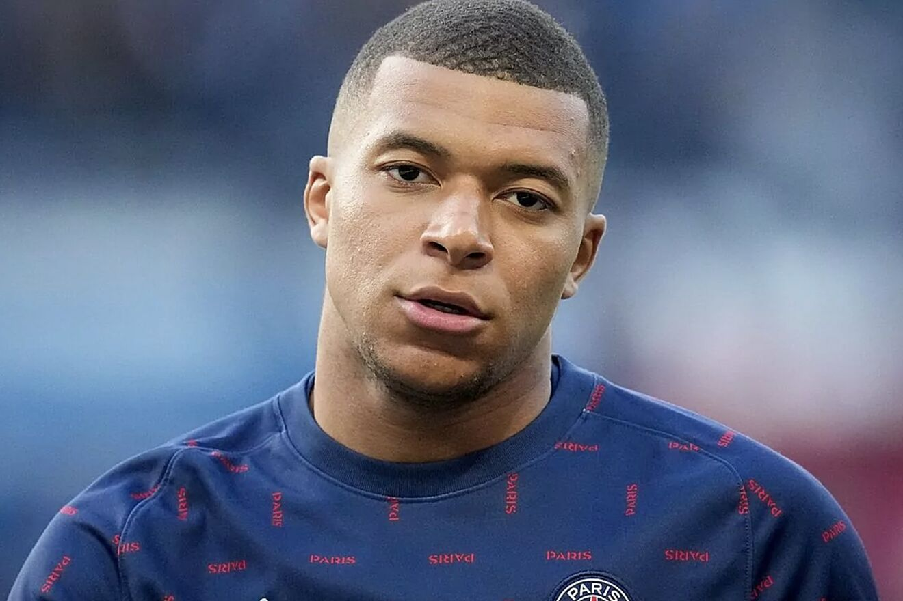
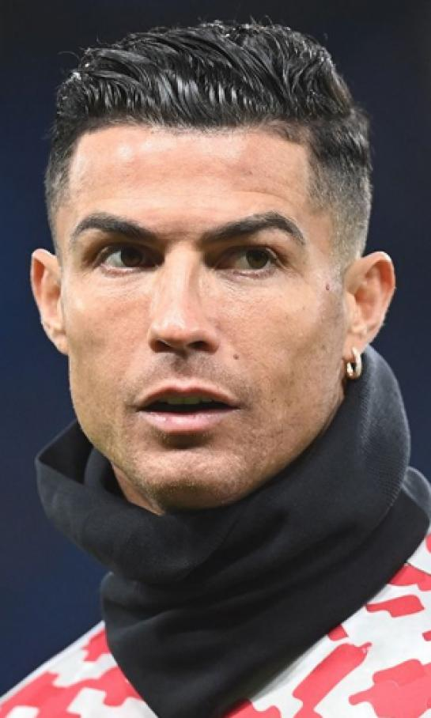

Pequeñas biografías

Kylian Mbappé
futbolista francés que juega como delantero en el Paris Saint-Germain F. C. de la Ligue 1
Leer más
Lionel Messi
futbolista argentino que juega como delantero o centrocampista. Jugador histórico del Fútbol Club Barcelona, al que estuvo ligado veinte años
Leer más
Erling Haaland
futbolista noruego que juega como delantero en el Manchester City F. C. de la Premier League de Inglaterra
Leer más

Cristiano Ronaldo
futbolista portugués. Juega como delantero y su equipo actual es el Al-Nassr de la Liga Profesional Saudí
Leer más
Neymar
futbolista profesional brasileño que juega como delantero en el club Paris Saint-Germain de la Ligue 1
Leer más
Robert Lewandowski
futbolista polaco que juega como delantero en el F. C. Barcelona de la Primera División de España
Leer más